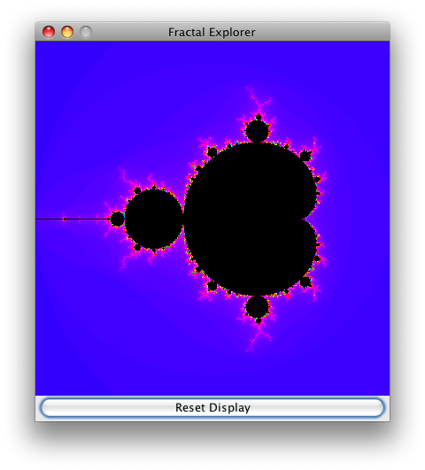
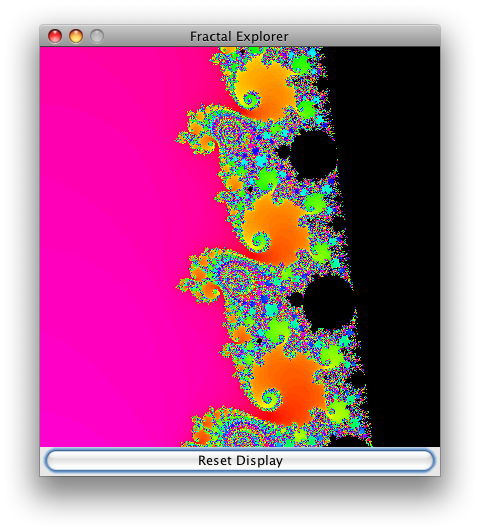
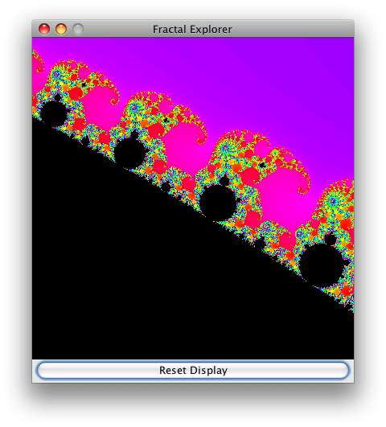

Задание #4. Программа для изучения фракталов
В нескольких следующих лабораторных работах вы соберете любопытное небольшое Java приложение, которое сможет рисовать удивительные изображения фракталов. Если вы до сих пор не занимались фракталами, вы будете поражены тем, как просто можно создавать потрясающе красивые изображения. Мы сделаем это все с помощью Swing Framework, функций Java API которые позволяют создавать графический пользовательский интерфейс.
Мы будем создавать это приложение на нескольких лабораторных работах, и наша первая версия будет очень проста, но в следующих лабораторных работах мы добавим к нему разные полезные функции, такие например как способность сохранять созданные изображения, и переключаться между различными видами фракталов. Графический пользовательский интерфейс сам по себе и механизм для реализации различных фракталов зависит от иерархии классов.
Вот простой пример пользовательского интерфейса в начальном состоянии:

А вот некоторые интересные области фрактала: морские берега и слоны!

Создание пользовательского интерфейса
Перед тем, как начать рисование фракталов нужно создать графический виджет, который позволит это сделать. Swing не имеет такого компонента, но можно легко сделать его самим. Заметим, что мы будем использовать в этой работе большое количество классов Java AWT и Swing, и просто невозможно в деталях описать каждый из них. Одако, в этом нет необходимости, так как доступная онлайн Документация Java API очень содержательна и проста в использовании. Перейдите к описанию пакета, в котором расположен нужный вам Java класс, выберете этот класс из списка, и прочтите подробную информацию о том как им пользоваться.
JImageDisplay наследованный от javax.swing.JComponent. Класс должен иметь одно private поле, экземпляр класса java.awt.image.BufferedImage. Класс BufferedImage будет управлять изображением с которым мы будем работать.JImageDisplay должен получать целые ширину и высоту и инициализировать поле BufferedImage ссылкой на новое изображение заданной ширины и высоты. Тип изображения должен быть равен TYPE_INT_RGB. Тип просто указывает формат представления цветов пикселов изображения; указанный тип означает что красный, зеленый и синий компоненты цвета каждая занимает 8 бит, и располагаются в перечисленном порядке в переменной целого типа.Ваш конструктор должен делать еще кое что: он должен вызывать метод родительского класса setPreferredSize() передавая ему заданные ширину и высоту. (Эти значения следует передать в объекте типа java.awt.Dimension, который специально создается для этого вызова.) Тогда компонент, который вы создаете, начнет прорисовывать изображение после того как будет добавлен к пользовательскому интерфейсу.
protected paintComponent(Graphics g) класса JComponent. Так как наш компонент просто сам выводит изображение, наша реализация будет очень проста! Во первых, реализация paintComponent(g) суперкласса должна вызываться в любом случае, для того чтобы все рамки и другие элементы правильно прорисовывались. После вызова метода суперкласса, вы можете нарисовать изображение в области компонента, используя подобные операции:g.drawImage(image, 0, 0, image.getWidth(), image.getHeight(), null);
(Мы указываем null в аргументе ImageObserver, потому что не нуждаемся в этом функционале)
clearImage() который устанавливает черный цвет для всех пикселов изображения (значение RGB 0) и drawPixel(int x, int y, int rgbColor) которых задает указанный цвет пиксела. Оба эти метода должны использовать один из методов setRGB() класса BufferedImage.Вычисление фрактала Мандельброта
Затем вы напишите код для вычисления очень хорошо известного фрактала Мандельброта. Для того чтобы в будущем поддержать отображение нескольких фракталов, вы начнете с файла FractalGenerator.java , от которого будут наследованы все другие генераторы фракталов. Обратите внимание на имеющиеся там очень полезные операции, транслирующие координаты экрана в систему координат вычисляемого фрактала.
Виды фракталов, с которыми нам предстоит иметь дело, вычисляются в комплексной области, и состоят из очень простых математических функций, которые периодически повторяются до тех пор, пока не выполнятся некоторые условия. Функция фрактала Мандельброта zn= zn-12 + c, где все значения комплексные числа, z0 = 0, и c особая отображаемая точка фрактала. Эти вычисления повторяются до тех пор, пока или |z| > 2 (в таком случае точка не принадлежит множеству Мандельброта), или пока количество итераций не достигнет максимального, например 2000 (в этом случае мы предполагаем, что точка принадлежит множеству).
Процесс прорисовки множества Мандельбота очень простой: перебираем все точки изображения, вычисляем количество итераций для каждой координаты изображения и закрашиваем точку цветом, зависящим от этого числа итераций. Но это уже следующая задача, сейчас надо просто реализовать описанные выше вычисления.
FractalGenerator с именем Mandelbrot. Вы должны в дочернем классе реализовать только два метода, getInitialRange() и numIterations().getInitialRange(Rectangle2D.Double) позволяет указать генератору фрактала, какая часть комплектной области "интересна" для вычисления фрактала. Обратите внимание на то, что объект прямоугольник передается как аргумент метода, и метод должен изменить поля прямоугольника так чтобы он содержал правильный начальный диапазон вычислений фрактала . (Посмотрите пример в методе FractalGenerator.recenterAndZoomRange().) Реализация этого метода в классе Mandelbrot должна устанавливать начальный диапазон (-2 - 1.5i) - (1 + 1.5i). То есть, значения x и y должны быть -2 и -1.5 соответственно, а ширина и высота должны быть одинаковы и равны 3.numIterations(double, double) должен содержать реализацию итеративной функции фрактала Мандельброта. Можете определить константу для указания "максимального числа итераций " как эта:public static final int MAX_ITERATIONS = 2000;
Затем вы можете использовать ее в своих вычислениях.
Учтите, что в Java отсутствует тип данных для комплексных чисел, так что вам понадобится реализовать итеративную функцию, используя отдельные double компоненты для хранения действительной и мнимой частей числа. (Вероятно вы способны сделать свой собственный класс для работы с комплексными числами, однако скорее всего дело того не стоит.) Можете попытаться увеличить скорость вычислений; например, не сравнивайте |z| с 2; сравнивайте |z|2 с 22 (с 4 J) чтобы избежать вычисления медленной функции квадратного корня. Не используйте для вычисления целых степеней метод Math.pow(); умножайте значения, иначе ваш код будет очень медленным.
Когда вы сделали MAX_ITERATIONS итераций просто верните -1 для того чтобы указать на то что точка не вышла за пределы множества.
Собираем все вместе
Наконец все готово для того чтобы рисовать фракталы! Теперь надо создать класс FractalExplorer который позволит вам изучить различные фрагменты фрактала, вычисляя их и отображая на экране с помощью графического интерфейса Swing, а также обработать различные сообщения от пользователя.
Как вы могли видеть на примерах представленных ранее изображений пользовательского интерфейса, Fractal Explorer очень простая программа, состоящая из JFrame с объектом JImageDisplay который отображает фрактал, и одной кнопкой JButton для сброса экрана в начальное состояние, так чтобы он показывал фрактал целиком. Для того чтобы сделать такую простую структуру приложения, поместите панель BorderLayout, в JFrame затем расположите JImageDisplay в центре панели и оставшуюся кнопку в "южной (south)" части панели.
FractalExplorer нужно будет хранить некоторую важную информацию о состоянии программы:JImageDisplay, для того чтобы мы имели возможность изменять изображение из различных методов класса по мере вычисления фрактала.FractalGenerator. Здесь следует использовать ссылку на базовый класс, для того чтобы в будущих версиях можно было показывать на экране различные типы фракталов.Rectangle2D.Double, который задает отображаемый диапазон в комплексной области.Конечно, все эти поля должны иметь модификатор доступа private...
createAndShowGUI() который инициализирует графический пользовательский интерфейс Swing: объект JFrame содержащий объект JImageDisplay и кнопку для сброса экрана в начальное состояние. JFame должен использовать объект java.awt.BorderLayout для расположения своих дочерних элементов; добавьте объект картинки JImageDisplay в позицию BorderLayout.CENTER, а кнопку в позицию BorderLayout.SOUTH.Задайте подходящий для приложения заголовок в JFrame и укажите операцию "exit" по умолчанию при закрытии окна (см документацию на метод JFrame.setDefaultCloseOperation()).
В конце, после того как компоненты пользовательcкого интерфейса проинициализированы и размещены в окне, добавьте эту последовательность вызовов:
frame.pack(); frame.setVisible(true); frame.setResizable(false);
FractalGenerator.getCoord(); например, для того, чтобы получить координату x соответствующую точке изображения с координатой X надо сделать так:double xCoord = FractalGenerator.getCoord(range.x, range.x + range.width, displaySize, x);
float hue = 0.7f + (float) numIters / 200f; int rgbColor = Color.HSBtoRGB(hue, 1f, 1f);
Конечно, если у вас появится другая интересная идея вычисления цвета по количеству итераций, можете ее реализовать.
drawPixel().java.awt.event.ActionListener от кнопки сброса. Обработчик просто должен сбрасывать диапазон отображения в начальное значение, указанное при инициализации генератора, и затем перерисовывать фрактал.Закончив с этим классом, добавьте в метод createAndShowGUI() регистрацию обработчика кнопки сброса.
java.awt.event.MouseListener от JImageDisplay. Нам нужна лишь обработка событий щелчка мышью, поэтому внутренний класс надо сделать наследником AWT класса MouseAdapter о котором говорилось в третьей лекции. Получив сообщение о щелчке мышью, обработчик должен преобразовать координаты точки изображения в отображаемую область фрактала и вызвать метод генератора srecenterAndZoomRange() с новыми координатами и масштабом 0.5. Так щелчком мыши по изображению фрактала можно будет увеличить изображение в этом месте!Конечно, не забудьте перерисовать фрактал после изменения области отображения.
После того как класс будет готов добавьте к методу createAndShowGUI() регистрацию обработчика события от JImageDisplay.
FractalExplorer с размером экрана 800 точек (или сколько желаете, но не слишком большой).createAndShowGUI() этого объекта.drawFractal() этого объекта для того чтобы вычислить и вывести на экран изображение фрактала!Теперь вы можете изучать фрактал Мандельброта, рассматривая его удивительные детали. Если вы сильно увеличите изображение, то столкнетесь с некоторыми интересными проблемами:
Возможно, вы обратите внимание на то, что изображение “ подвисает ” во время перерисовки фрактала. Этот эффект мы изучим в следующих лабораторных работах, и вместе с этим рассмотрим как увеличить скорость прорисовки фрактала используя несколько процессоров.
Copyright (C) 2015, California Institute of Technology. All rights reserved.